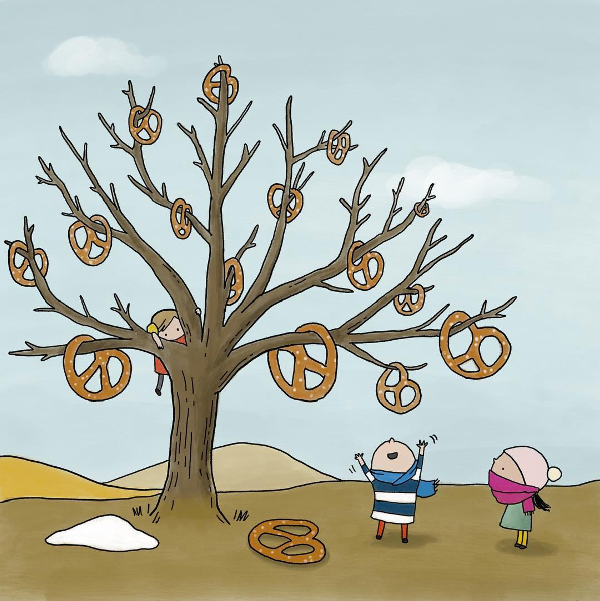

Welcome to the Palaeontological Association Annual Meeting in Erlangen and to the Fossil sampling biases and phylogenetics workshop!
The workshop will take place on Tuesday 10.12.24 9:00–12:30 in the seminar room on the ground floor of the main FAU University Library (just 10 minutes from the station).
There are no fees associated with this workshop. You just need to come along with your laptop!
Instructors: Bethany Allen (ETHZ), Laura Mulvey (QMUL), Rachel Warnock (FAU), Joëlle Barido-Sottani (ENS), Tim Brandler (FAU), Alessio Capobianco (LMU), Robert Haobo Yuan (ETHZ)
Ahead of the workshop please install the following software:
If you encounter any installation issues, please get in touch beforehand - describe the issue and provide details of the computer and operating system you’re using.
PDFs available here: https://tinyurl.com/ycy9bjka
We also recommend the Paul Lewis Phyloseminar lecture series (especially parts 1, 2, and 3a). These provide a really great intro to some of the theory we’ll be covering.